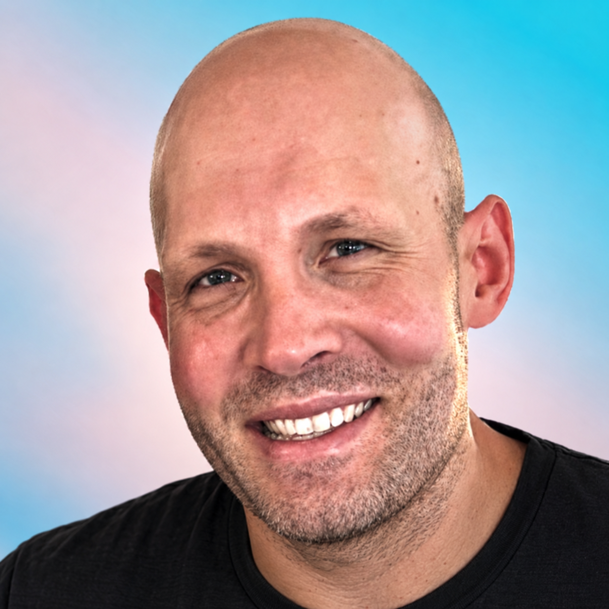

Design leader with 18 years’ experience, combining strategic thinking, hands-on craft, team building and scalable systems.

Defining a design vision to secure a £1m+ Investment in a new CCMS
Led and de-risked the transformation of NICE's publishing and clinical guidance model, delivering a UX proof-of-concept that secured £1M+ in funding for a new CCMS.

Establishing a unified design system at NICE
Led the creation and rollout of a unified design system across 30+ codebases and 34 products, reducing delivery effort by 13% and a reduction in page load time by 32% across core services.

Helping GP's find the right guidance faster
Redesigned the CKS service — improving task efficiency by 27% and cutting time-to-answer for 400k primary care clinicians under real-time consultation pressure.

Creating the conditions for UCD to influence outcomes
Created the organisational conditions for user-centred design to influence strategy, prioritisation and investment across NICE.
About me

Hey there! I’m John — a design leader with 18 years’ experience turning complex challenges into clear, accessible products and services in regulated organisations.
My work often involves:
- understanding what people genuinely need
- setting product and design direction
- getting hands-on to explore and test ideas
- building and coaching high-performing teams
- helping multidisciplinary teams work well together
- improving how organisations make decisions
Over the years, this has meant leading the design of products and services used by millions of people. I’ve grown a design and research team, built a design system from the ground up and secured more than £1 million to transform how clinical guidance is created and published.
I care about what gets delivered, but I care just as much about how people work together to deliver it. I try to create an environment where people feel listened to, trusted and able to do their best work.
Skills
Design & Product Strategy
Building cross-functional relationships and partnering with executive stakeholders to shape design vision and product direction in complex, regulated environments.
End-to-End Product & Service Design
Leading and collaborating with multidisciplinary teams to frame the right problems and design usable, accessible, scalable products and services.
Building & Coaching Design Teams
Developing confident, high-performing teams through coaching, regular feedback and a culture of trust, collaboration and autonomy.
Scaling Quality & Consistency
Creating design systems, standards and frameworks that improve quality, consistency and delivery speed as teams scale.
Improving Organisational Decision-Making
Mapping relationships between technology, people and processes to improve governance, strengthen communication and enable faster, better-informed decisions.
What others say
John's got a rare mix of being both a fantastic hands-on UX designer, but also being able to zoom out and articulate what good design practice should achieve at an organisational level. We worked together on complex, regulated products that reached millions of people annually, and John was a really calm, considered presence throughout - and also a lot of fun to work with.
Working under John’s leadership at NICE was formative. He gave me the encouragement and space to move from a UX designer into a service design role, and to advocate for service design as a discipline within the organisation, something that required both confidence and credibility, which he helped me build.
John is a highly professional, supportive, and experienced Head of Product Design who thrives on challenges and brings out the best in those around him. He fosters a strong sense of collaboration within his teams, always reinforcing the belief that better products are created when people work together.
I had the pleasure of having John as a manager for 5 years at NICE. He's been an incredibly supportive and empathetic person to work with, and was always very understanding with any of his reports if they've needed help with personal issues.
Excerpts from LinkedIn recommendations.